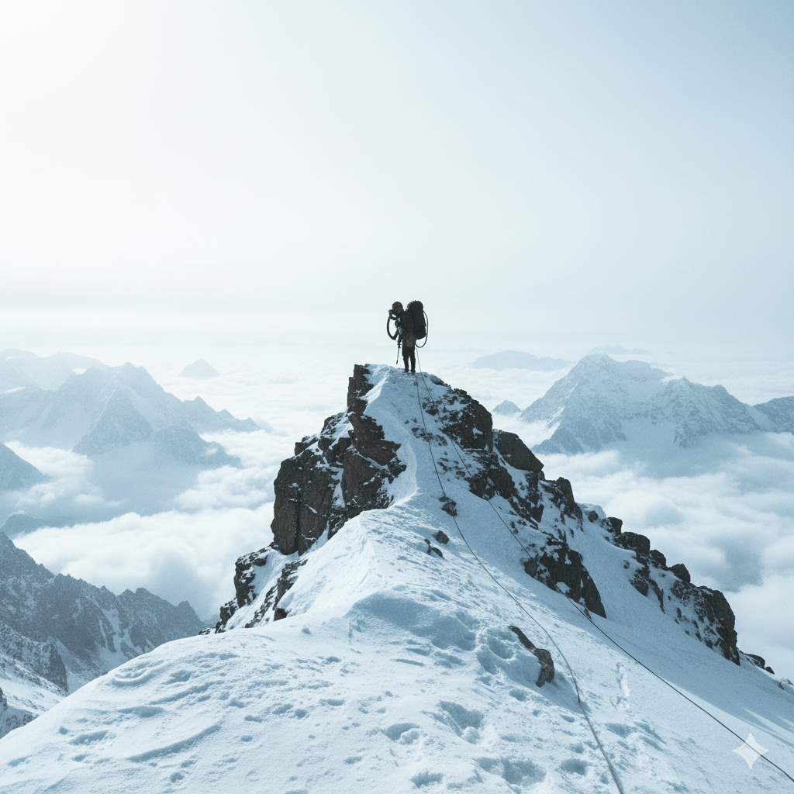

THE 14 EIGHT-THOUSANDERS
Quick visual index — hover any peak to preview. Tap or click to open each peak's page.
THE 14 EIGHT-THOUSANDERS
Ordered highest → lowest | Names outside | Hover to preview


The Death Zone
8,000. For most people, a perfectly innocent, somewhat meaningless number. But for mountain climbers, it can be the number that defines their lives forever. There are only 14 mountain peaks on Earth that stand taller than 8,000 meters. They are the only mountains on the planet that rise into a place called the Death Zone. Up here, the air contains only about one-third of the oxygen found at sea level. The human body cannot survive here for long — it slowly shuts down instead of recovering. Movement becomes painfully slow, the heart works at its maximum, and thinking becomes foggy. Without supplemental oxygen, most climbers would quickly lose consciousness and collapse. That’s why every second in the Death Zone counts — survival depends on descending fast after summiting.
> Learn more
.png)
About the 8000ers
The world has fourteen mountains over 8,000 metres, all located in the Himalayas and Karakoram ranges. These peaks span Nepal, India, Pakistan, and Tibet/China, each presenting unique challenges and risks. Routes involve steep ice faces, crevasses, seracs, avalanches and extreme exposure to wind and cold. Climbers must carefully acclimatize over weeks, gradually pushing higher while allowing the body to adapt. Success relies on logistics, weather forecasts, fixed ropes, and coordinated team support on the mountain. Local communities — especially Sherpa and High-Altitude Porters — play a vital role in modern expeditions. These mountains hold cultural, spiritual and historical significance in the regions surrounding them. Ethical climbing requires respecting nature, minimizing waste and supporting fair treatment of mountain workers.
> Learn moreClimbers Who Completed All 14
Only a small number of people have summited all fourteen 8000-metre peaks, making it one of the rarest achievements in mountaineering. Reinhold Messner was the first to complete the list without supplemental oxygen, inspiring generations of climbers. Jerzy Kukuczka followed soon after, proving that dedication and resilience can overcome extreme adversity. Some climbers take more than a decade to complete the list, while others attempt them within a short time frame. The challenge includes dangerous weather windows, technical climbing, and unpredictable mountain conditions. Even elite climbers face setbacks — injuries, failed attempts, rescues, and tragedies are part of the pursuit. Ethics matter: modern climbers emphasize respecting local workers, environmental protection and safety limits. Completing the 14 peaks is not only about courage but also about judgment, humility, and survival. Those who succeed join an exclusive list, representing some of the strongest minds and bodies in human history.
> Learn more